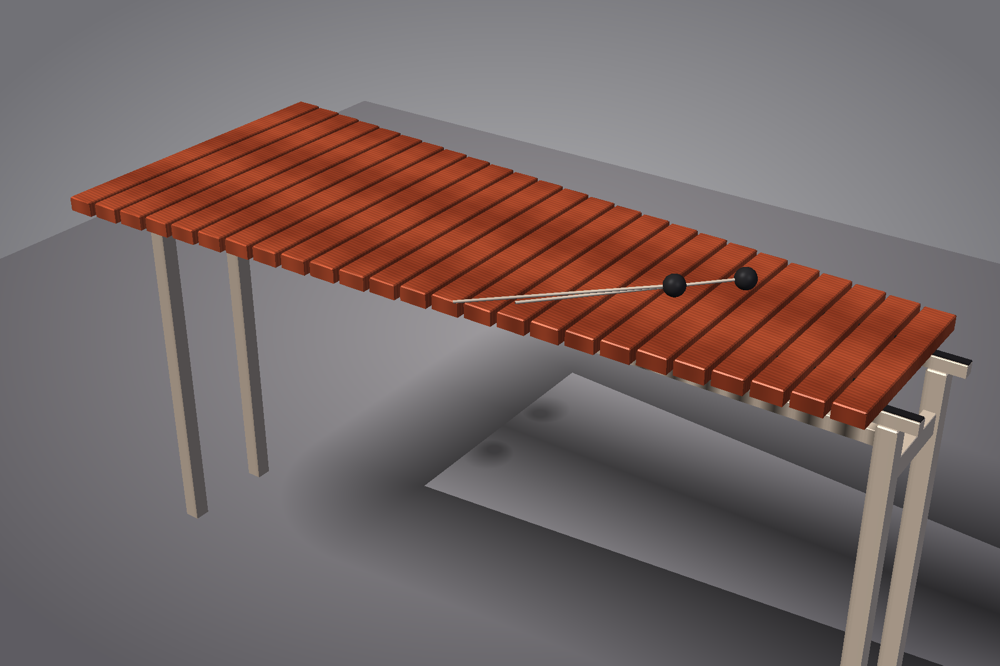
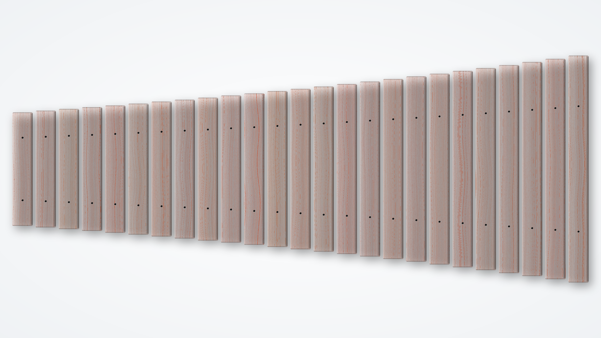
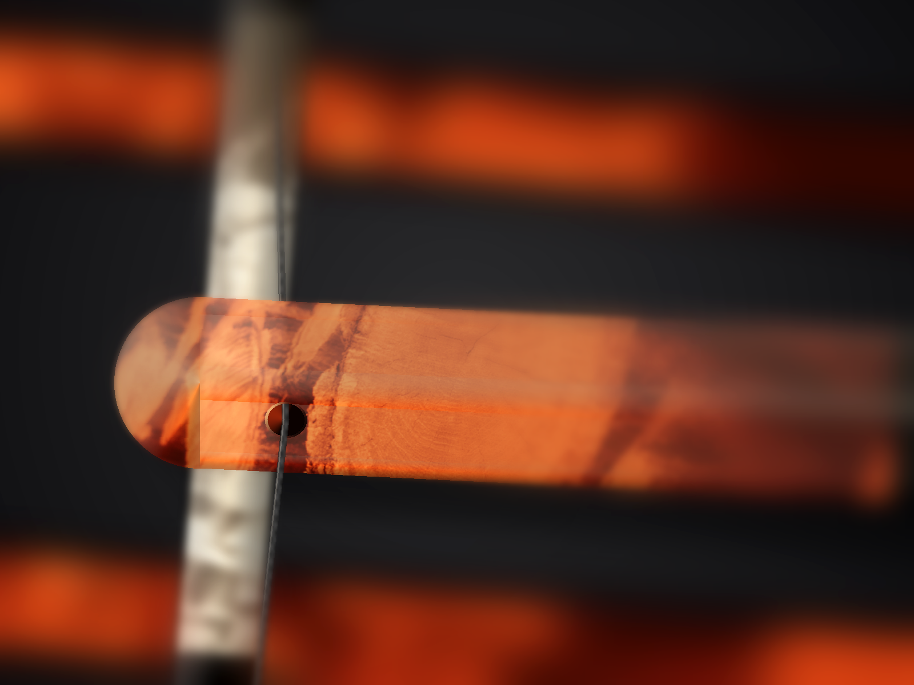

Status: concept packet
A 25-bar chromatic xylophone, C5 to C7, in Padauk on a parametric trestle frame. Free-free flat-bar geometry, 12th-overtone tuning convention, optional quarter-wave closed-pipe resonators (deferred). Designed deliberately as the *simpler* sibling of a future marimba sister repo: every place this design chooses the simpler path, the marimba-equivalent is documented inline so the marimba scaffold inherits cleanly.
Interactive Wolfram model not yet published for this instrument. Deploy via wolfram-cloud-sync (CloudDeploy the model's Manipulate) to embed it here.



Concept renders — not fabrication authority.